为什么使用索引
索引是存储引擎用于快速找到数据记录的一种数据结构，就好比一本教科书的目录部分，通过目录中找到对应文章的页码，便可快速定位到需要的文章。MySQL中也是一样的道理，进行数据查找时，首先查看查询条件是否命中某条索引，符合则通过索引查找相关数据，如果不符合则需要全表扫描，即需要一条一条地查找记录，直到找到与条件符合的记录。
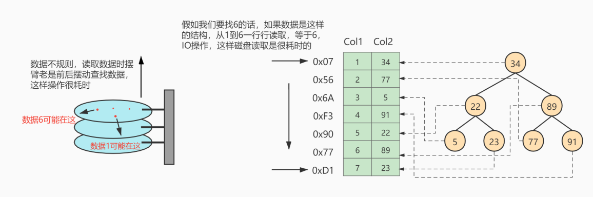
如上图所示，数据库没有索引的情况下，数据分布在硬盘不同的位置上面，读取数据时，摆臂需要前后摆动查询数据，这样操作非常消耗时间。如果数据顺序摆放，那么也需要从1到6行按顺序读取，这样就相当于进行了6次IO操作，依旧非常耗时。如果我们不借助任何索引结构帮助我们快速定位数据的话，我们查找 Col 2 = 89 这条记录，就要逐行去查找、去比较。从Col 2 = 34 开始，进行比较，发现不是，继续下一行。我们当前的表只有不到10行数据，但如果表很大的话，有上千万条数据，就意味着要做很多很多次硬盘I/0才能找到。现在要查找 Col 2 = 89 这条记录。CPU必须先去磁盘查找这条记录，找到之后加载到内存，再对数据进行处理。这个过程最耗时间就是磁盘I/O（涉及到磁盘的旋转时间（速度较快），磁头的寻道时间(速度慢、费时)）
假如给数据使用 二叉树 这样的数据结构进行存储，如下图所示
 对字段 Col 2 添加了索引，就相当于在硬盘上为 Col 2 维护了一个索引的数据结构，即这个
对字段 Col 2 添加了索引，就相当于在硬盘上为 Col 2 维护了一个索引的数据结构，即这个 二叉搜索树。二叉搜索树的每个结点存储的是 (K, V) 结构，key 是 Col 2，value 是该 key 所在行的文件指针（地址）。比如：该二叉搜索树的根节点就是：(34, 0x07)。现在对 Col 2 添加了索引，这时再去查找 Col 2 = 89 这条记录的时候会先去查找该二叉搜索树（二叉树的遍历查找)。读 34 到内存，89 > 34; 继续右侧数据，读 89 到内存，89==89；找到数据返回。找到之后就根据当前结点的 value 快速定位到要查找的记录对应的地址。我们可以发现，只需要 查找两次 就可以定位到记录的地址，查询速度就提高了。
这就是我们为什么要建索引，目的就是为了 减少磁盘I/O的次数，加快查询速率。
索引及其优缺点
索引概述
MySQL官方对索引的定义为：索引（Index）是帮助MySQL高效获取数据的数据结构。
索引的本质：索引是数据结构。你可以简单理解为“排好序的快速查找数据结构”，满足特定查找算法。 这些数据结构以某种方式指向数据， 这样就可以在这些数据结构的基础上实现 高级查找算法 。
索引是在存储引擎中实现的，因此每种存储引擎的索引不一定完全相同，并且每种存储引擎不一定支持所有索引类型。同时，存储引擎可以定义每个表的 最大索引数和 最大索引长度。所有存储引擎支持每个表至少16个索引，总索引长度至少为256字节。有些存储引擎支持更多的索引数和更大的索引长度。
优点
- 类似大学图书馆建书目索引，提高数据检索的效率，降低 数据库的IO成本 ，这也是创建索引最主 要的原因。
- 通过创建唯一索引，可以保证数据库表中每一行 数据的唯一性 。
- 在实现数据的 参考完整性方面，可以 加速表和表之间的连接 。换句话说，对于有依赖关系的子表和父表联合查询时， 可以提高查询速度。
- 在使用分组和排序子句进行数据查询时，可以显著 减少查询中分组和排序的时间 ，降低了CPU的消耗。
缺点
增加索引也有许多不利的方面，主要表现在如下几个方面：
- 创建索引和维护索引要 耗费时间 ，并 且随着数据量的增加，所耗费的时间也会增加。
- 索引需要占 磁盘空间 ，除了数据表占数据空间之 外，每一个索引还要占一定的物理空间， 存储在磁盘上 ，如果有大量的索引，索引文件就可能比数据文 件更快达到最大文件尺寸。
- 虽然索引大大提高了查询速度，同时却会 降低更新表的速度 。当对表 中的数据进行增加、删除和修改的时候，索引也要动态地维护，这样就降低了数据的维护速度。 因此，选择使用索引时，需要综合考虑索引的优点和缺点。
因此，选择使用索引时，需要综合考虑索引的优点和缺点。
提示：
索引可以提高查询的速度，但是会影响插入记录的速度。这种情况下，最好的办法是先删除表中的索引，然后插入数据，插入完成后再创建索引。
InnoDB中索引的推演
索引之前的查找
先来看一个精确匹配的例子：
1 | SELECT [列名列表] FROM 表名 WHERE 列名 = xxx; |
在一个页中的查找
假设目前表中的记录比较少，所有的记录都可以被存放到一个页中，在查找记录的时候可以根据搜索条件的不同分为两种情况：
以主键为搜索条件
可以在页目录中使用
二分法快速定位到对应的槽，然后再遍历该槽对用分组中的记录即可快速找到指定记录。以其他列作为搜索条件
因为在数据页中并没有对非主键列简历所谓的页目录，所以我们无法通过二分法快速定位相应的槽。这种情况下只能从
最小记录开始依次遍历单链表中的每条记录， 然后对比每条记录是不是符合搜索条件。很显然，这种查找的效率是非常低的。
在很多页中查找
在很多页中查找记录的活动可以分为两个步骤：
- 定位到记录所在的页。
- 从所在的页内中查找相应的记录。
在没有索引的情况下，不论是根据主键列或者其他列的值进行查找，由于我们并不能快速的定位到记录所在的页，所以只能 从第一个页沿着双向链表 一直往下找，在每一个页中根据我们上面的查找方式去查 找指定的记录。因为要遍历所有的数据页，所以这种方式显然是 超级耗时 的。如果一个表有一亿条记录呢？此时 索引 应运而生。
设计索引
建一个表：
1 | mysql> CREATE TABLE index_demo( |
这个新建的 index_demo 表中有2个INT类型的列，1个CHAR(1)类型的列，而且我们规定了c1列为主键， 这个表使用 Compact 行格式来实际存储记录的。这里我们简化了index_demo表的行格式示意图：

我们只在示意图里展示记录的这几个部分：
- record_type ：记录头信息的一项属性，表示记录的类型， 0 表示普通记录、 2 表示最小记 录、 3 表示最大记录、 1 暂时还没用过，下面讲。
- mysql> CREATE TABLE index_demo( -> c1 INT, -> c2 INT, -> c3 CHAR(1), -> PRIMARY KEY(c1) -> ) ROW_FORMAT = Compact; next_record ：记录头信息的一项属性，表示下一条地址相对于本条记录的地址偏移量，我们用 箭头来表明下一条记录是谁。
- 各个列的值 ：这里只记录在 index_demo 表中的三个列，分别是 c1 、 c2 和 c3 。
- 其他信息 ：除了上述3种信息以外的所有信息，包括其他隐藏列的值以及记录的额外信息。
将记录格式示意图的其他信息项暂时去掉并把它竖起来的效果就是这样：

把一些记录放到页里的示意图就是：
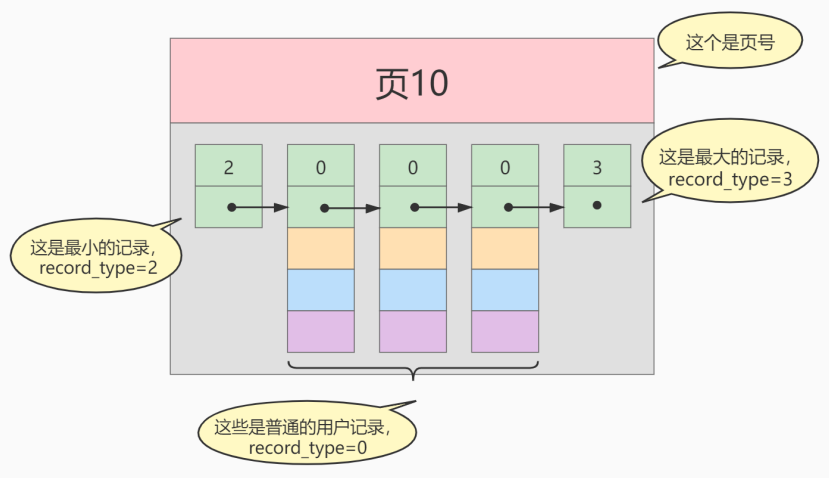
一个简单的索引设计方案
我们在根据某个搜索条件查找一些记录时为什么要遍历所有的数据页呢？因为各个页中的记录并没有规律，我们并不知道我们的搜索条件匹配哪些页中的记录，所以不得不依次遍历所有的数据页。所以如果我们 想快速的定位到需要查找的记录在哪些数据页 中该咋办？我们可以为快速定位记录所在的数据页而建立一个目录 ，建这个目录必须完成下边这些事：
下一个数据页中用户记录的主键值必须大于上一个页中用户记录的主键值。
假设：每个数据结构最多能存放3条记录（实际上一个数据页非常大，可以存放下好多记录）。
1
INSERT INTO index_demo VALUES(1, 4, 'u'), (3, 9, 'd'), (5, 3, 'y');
那么这些记录以及按照主键值的大小串联成一个单向链表了，如图所示：
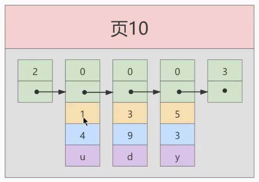
从图中可以看出来， index_demo 表中的3条记录都被插入到了编号为10的数据页中了。此时我们再来插入一条记录
1 | INSERT INTO index_demo VALUES(4, 4, 'a'); |
因为 页10 最多只能放3条记录，所以我们不得不再分配一个新页：
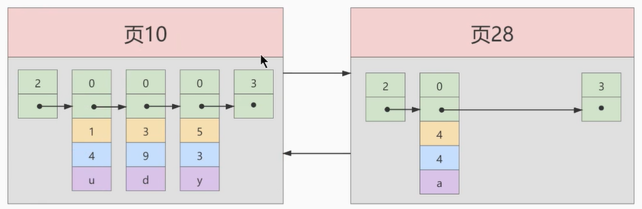
注意：新分配的 数据页编号可能并不是连续的。它们只是通过维护者上一个页和下一个页的编号而建立了 链表 关系。另外，页10中用户记录最大的主键值是5，而页28中有一条记录的主键值是4，因为5>4，所以这就不符合下一个数据页中用户记录的主键值必须大于上一个页中用户记录的主键值的要求，所以在插入主键值为4的记录的时候需要伴随着一次 记录移动，也就是把主键值为5的记录移动到页28中，然后再把主键值为4的记录插入到页10中，这个过程的示意图如下：

这个过程表明了在对页中的记录进行增删改查操作的过程中，我们必须通过一些诸如 记录移动 的操作来始终保证这个状态一直成立：下一个数据页中用户记录的主键值必须大于上一个页中用户记录的主键值。这个过程称为 页分裂。
- 给所有的页建立一个目录项。
由于数据页的 编号可能是不连续 的，所以在向 index_demo 表中插入许多条记录后，可能是这样的效果：

我们需要给它们做个 目录，每个页对应一个目录项，每个目录项包括下边两个部分：
1）页的用户记录中最小的主键值，我们用 key 来表示。
2）页号，我们用 page_on 表示。
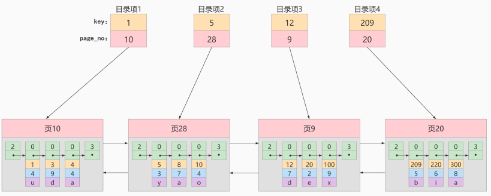
以 页28 为例，它对应 目录项2 ，这个目录项中包含着该页的页号 28 以及该页中用户记录的最小主 键值 5 。我们只需要把几个目录项在物理存储器上连续存储（比如：数组），就可以实现根据主键 值快速查找某条记录的功能了。比如：查找主键值为 20 的记录，具体查找过程分两步：
- 先从目录项中根据 二分法 快速确定出主键值为 20 的记录在 目录项3 中（因为 12 < 20 < 209 ），它对应的页是 页9 。
- 再根据前边说的在页中查找记录的方式去 页9 中定位具体的记录。
至此，针对数据页做的简易目录就搞定了。这个目录有一个别名，称为 索引 。
InnoDB中的索引方案
迭代1次：目录项纪录的页
InnoDB怎么区分一条记录是普通的 用户记录 还是 目录项记录 呢？使用记录头信息里的 record_type 属性，它的各自取值代表的意思如下：
- 0：普通的用户记录
- 1：目录项记录
- 2：最小记录
- 3：最大记录
我们把前边使用到的目录项放到数据页中的样子就是这样：

从图中可以看出来，我们新分配了一个编号为30的页来专门存储目录项记录。这里再次强调 目录项记录 和普通的 用户记录 的不同点：
- 目录项记录 的 record_type 值是1，而 普通用户记录 的 record_type 值是0。
- 目录项记录只有 主键值和页的编号 两个列，而普通的用户记录的列是用户自己定义的，可能包含 很多列 ，另外还有InnoDB自己添加的隐藏列。
- 了解：记录头信息里还有一个叫 min_rec_mask 的属性，只有在存储 目录项记录 的页中的主键值最小的 目录项记录 的 min_rec_mask 值为 1 ，其他别的记录的 min_rec_mask 值都是 0 。
相同点：两者用的是一样的数据页，都会为主键值生成 Page Directory （页目录），从而在按照主键值进行查找时可以使用 二分法 来加快查询速度。
现在以查找主键为 20 的记录为例，根据某个主键值去查找记录的步骤就可以大致拆分成下边两步：
- 先到存储 目录项记录 的页，也就是页30中通过 二分法 快速定位到对应目录项，因为 12 < 20 < 209 ，所以定位到对应的记录所在的页就是页9。
- 再到存储用户记录的页9中根据 二分法 快速定位到主键值为 20 的用户记录。
迭代2次：多个目录项纪录的页

从图中可以看出，我们插入了一条主键值为320的用户记录之后需要两个新的数据页：
- 为存储该用户记录而新生成了 页31 。
- 因为原先存储目录项记录的 页30的容量已满 （我们前边假设只能存储4条目录项记录），所以不得 不需要一个新的 页32 来存放 页31 对应的目录项。
现在因为存储目录项记录的页不止一个，所以如果我们想根据主键值查找一条用户记录大致需要3个步骤，以查找主键值为 20 的记录为例：
- 确定 目录项记录页 我们现在的存储目录项记录的页有两个，即 页30 和 页32 ，又因为页30表示的目录项的主键值的 范围是 [1, 320) ，页32表示的目录项的主键值不小于 320 ，所以主键值为 20 的记录对应的目 录项记录在 页30 中。
- 通过目录项记录页 确定用户记录真实所在的页 。 在一个存储 目录项记录 的页中通过主键值定位一条目录项记录的方式说过了。
- 在真实存储用户记录的页中定位到具体的记录。
迭代3次：目录项记录页的目录页
如果我们表中的数据非常多则会产生很多存储目录项记录的页，那我们怎么根据主键值快速定位一个存储目录项记录的页呢？那就为这些存储目录项记录的页再生成一个更高级的目录，就像是一个多级目录一样，大目录里嵌套小目录，小目录里才是实际的数据，所以现在各个页的示意图就是这样子：
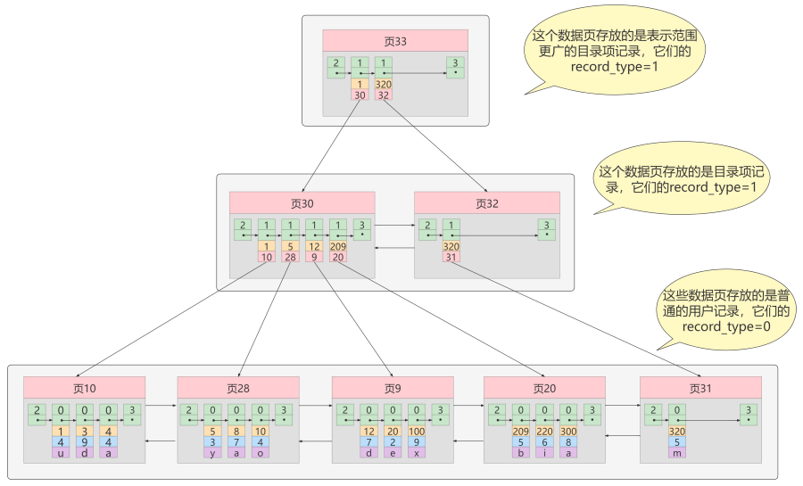
如图，我们生成了一个存储更高级目录项的 页33 ，这个页中的两条记录分别代表页30和页32，如果用 户记录的主键值在 [1, 320) 之间，则到页30中查找更详细的目录项记录，如果主键值 不小于320 的 话，就到页32中查找更详细的目录项记录。
我们可以用下边这个图来描述它：

这个数据结构，它的名称是 B+树 。
B+Tree
一个B+树的节点其实可以分成好多层，规定最下边的那层，也就是存放我们用户记录的那层为第 0 层， 之后依次往上加。之前我们做了一个非常极端的假设：存放用户记录的页 最多存放3条记录 ，存放目录项 记录的页 最多存放4条记录 。其实真实环境中一个页存放的记录数量是非常大的，假设所有存放用户记录 的叶子节点代表的数据页可以存放 100条用户记录 ，所有存放目录项记录的内节点代表的数据页可以存 放 1000条目录项记录 ，那么：
- 如果B+树只有1层，也就是只有1个用于存放用户记录的节点，最多能存放 100 条记录。
- 如果B+树有2层，最多能存放 1000×100=10,0000 条记录。
- 如果B+树有3层，最多能存放 1000×1000×100=1,0000,0000 条记录。
- 如果B+树有4层，最多能存放 1000×1000×1000×100=1000,0000,0000 条记录。相当多的记录！
你的表里能存放 100000000000 条记录吗？所以一般情况下，我们用到的 B+树都不会超过4层 ，那我们通过主键值去查找某条记录最多只需要做4个页面内的查找（查找3个目录项页和一个用户记录页），又因为在每个页面内有所谓的 Page Directory （页目录），所以在页面内也可以通过 二分法 实现快速 定位记录。
常见索引概念
索引按照物理实现方式，索引可以分为 2 种：聚簇（聚集）和非聚簇（非聚集）索引。我们也把非聚集 索引称为二级索引或者辅助索引。
聚簇索引
聚簇索引并不是一种单独的索引类型，而是一种数据存储方式（所有的用户记录都存储在了叶子结点），也就是所谓的 索引即数据，数据即索引。
术语”聚簇”表示当前数据行和相邻的键值聚簇的存储在一起
特点：
使用记录主键值的大小进行记录和页的排序，这包括三个方面的含义：
页内的记录是按照主键的大小顺序排成一个单向链表。- 各个存放
用户记录的页也是根据页中用户记录的主键大小顺序排成一个双向链表。 - 存放
目录项记录的页分为不同的层次，在同一层次中的页也是根据页中目录项记录的主键大小顺序排成一个双向链表。
B+树的 叶子节点 存储的是完整的用户记录。
所谓完整的用户记录，就是指这个记录中存储了所有列的值（包括隐藏列）。
我们把具有这两种特性的B+树称为聚簇索引，所有完整的用户记录都存放在这个聚簇索引的叶子节点处。这种聚簇索引并不需要我们在MySQL语句中显式的使用INDEX 语句去创建， InnDB 存储引擎会 自动 的为我们创建聚簇索引。
优点：
数据访问更快，因为聚簇索引将索引和数据保存在同一个B+树中，因此从聚簇索引中获取数据比非聚簇索引更快- 聚簇索引对于主键的
排序查找和范围查找速度非常快 - 按照聚簇索引排列顺序，查询显示一定范围数据的时候，由于数据都是紧密相连，数据库不用从多 个数据块中提取数据，所以
节省了大量的io操作。
缺点：
插入速度严重依赖于插入顺序，按照主键的顺序插入是最快的方式，否则将会出现页分裂，严重影响性能。因此，对于InnoDB表，我们一般都会定义一个自增的ID列为主键更新主键的代价很高，因为将会导致被更新的行移动。因此，对于InnoDB表，我们一般定义主键为不可更新二级索引访问需要两次索引查找，第一次找到主键值，第二次根据主键值找到行数据
二级索引（辅助索引、非聚簇索引）
如果我们想以别的列作为搜索条件该怎么办？肯定不能是从头到尾沿着链表依次遍历记录一遍。
答案：我们可以多建几颗B+树，不同的B+树中的数据采用不同的排列规则。比方说我们用c2列的大小作为数据页、页中记录的排序规则，再建一课B+树，效果如下图所示：

这个B+树与上边介绍的聚簇索引有几处不同：
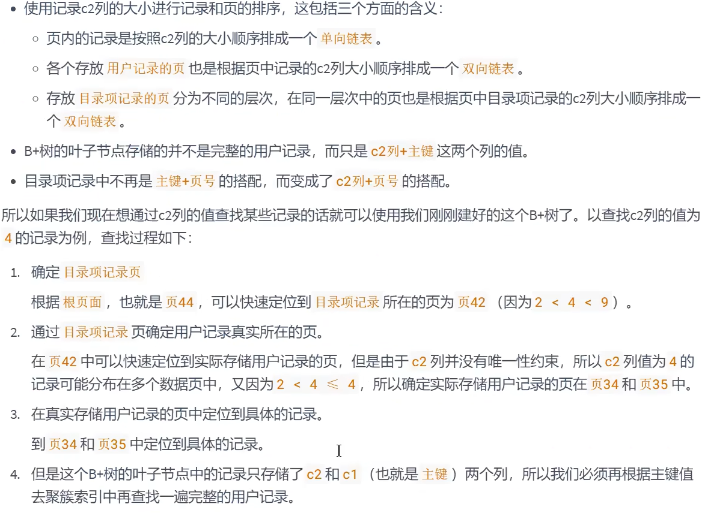
概念：回表
我们根据这个以c2列大小排序的B+树只能确定我们要查找记录的主键值，所以如果我们想根 据c2列的值查找到完整的用户记录的话，仍然需要到 聚簇索引 中再查一遍，这个过程称为 回表 。也就 是根据c2列的值查询一条完整的用户记录需要使用到 2 棵B+树！
问题：为什么我们还需要一次 回表 操作呢？直接把完整的用户记录放到叶子节点不OK吗？
回答：
如果把完整的用户记录放到叶子结点是可以不用回表。但是太占地方了，相当于每建立一课B+树都需要把所有的用户记录再都拷贝一遍，这就有点太浪费存储空间了。
因为这种按照非主键列建立的B+树需要一次回表操作才可以定位到完整的用户记录，所以这种B+树也被称为二级索引，或者辅助索引。由于使用的是c2列的大小作为B+树的排序规则，所以我们也称这个B+树为c2列简历的索引。
非聚簇索引的存在不影响数据在聚簇索引中的组织，所以一张表可以有多个非聚簇索引。

小结：聚簇索引与非聚簇索引的原理不同，在使用上也有一些区别：
- 聚簇索引的
叶子节点存储的就是我们的数据记录, 非聚簇索引的叶子节点存储的是数据位置。非聚簇索引不会影响数据表的物理存储顺序。 - 一个表
只能有一个聚簇索引，因为只能有一种排序存储的方式，但可以有多个非聚簇索引，也就是多个索引目录提供数据检索。 - 使用聚簇索引的时候，数据的
查询效率高，但如果对数据进行插入，删除，更新等操作，效率会比非聚簇索引低。
联合索引
我们也可以同时以多个列的大小作为排序规则，也就是同时为多个列建立索引，比方说我们想让B+树按 照 c2和c3列 的大小进行排序，这个包含两层含义：
- 先把各个记录和页按照c2列进行排序。
- 在记录的c2列相同的情况下，采用c3列进行排序
为c2和c3建立的索引的示意图如下：

如图所示，我们需要注意以下几点：
- 每条目录项都有c2、c3、页号这三个部分组成，各条记录先按照c2列的值进行排序，如果记录的c2列相同，则按照c3列的值进行排序
- B+树叶子节点处的用户记录由c2、c3和主键c1列组成
注意一点，以c2和c3列的大小为排序规则建立的B+树称为 联合索引 ，本质上也是一个二级索引。它的意 思与分别为c2和c3列分别建立索引的表述是不同的，不同点如下：
- 建立 联合索引 只会建立如上图一样的1棵B+树。
- 为c2和c3列分别建立索引会分别以c2和c3列的大小为排序规则建立2棵B+树。
InnoDB的B+树索引的注意事项
根页面位置万年不动
实际上B+树的形成过程是这样的：
- 每当为某个表创建一个B+树索引（聚簇索引不是人为创建的，默认就有）的时候，都会为这个索引创建一个
根结点页面。最开始表中没有数据的时候，每个B+树索引对应的根结点中即没有用户记录，也没有目录项记录。 - 随后向表中插入用户记录时，先把用户记录存储到这个
根节点中。 - 当根节点中的可用
空间用完时继续插入记录，此时会将根节点中的所有记录复制到一个新分配的页，比如页a中，然后对这个新页进行页分裂的操作，得到另一个新页，比如页b。这时新插入的记录根据键值（也就是聚簇索引中的主键值，二级索引中对应的索引列的值）的大小就会被分配到页a或者页b中，而根节点便升级为存储目录项记录的页。
这个过程特别注意的是：一个B+树索引的根节点自诞生之日起，便不会再移动。这样只要我们对某个表创建一个索引，那么它的根节点的页号便会被记录到某个地方。然后凡是 InnoDB 存储引擎需要用到这个索引的时候，都会从哪个固定的地方取出根节点的页号，从而来访问这个索引。
内节点中目录项记录的唯一性
我们知道B+树索引的内节点中目录项记录的内容是 索引列 + 页号 的搭配，但是这个搭配对于二级索引来说有点不严谨。还拿 index_demo 表为例，假设这个表中的数据是这样的：

如果二级索引中目录项记录的内容只是 索引列 + 页号 的搭配的话，那么为 c2 列简历索引后的B+树应该长这样：

如果我们想新插入一行记录，其中 c1 、c2 、c3 的值分别是: 9、1、c, 那么在修改这个为 c2 列建立的二级索引对应的 B+ 树时便碰到了个大问题：由于 页3 中存储的目录项记录是由 c2列 + 页号 的值构成的，页3 中的两条目录项记录对应的 c2 列的值都是1，而我们 新插入的这条记录 的 c2 列的值也是 1，那我们这条新插入的记录到底应该放在 页4 中，还是应该放在 页5 中？答案：对不起，懵了
为了让新插入记录找到自己在那个页面，我们需要保证在B+树的同一层页节点的目录项记录除页号这个字段以外是唯一的。所以对于二级索引的内节点的目录项记录的内容实际上是由三个部分构成的：
- 索引列的值
- 主键值
- 页号
也就是我们把主键值也添加到二级索引内节点中的目录项记录，这样就能保住 B+ 树每一层节点中各条目录项记录除页号这个字段外是唯一的，所以我们为c2建立二级索引后的示意图实际上应该是这样子的：
这样我们再插入记录(9, 1, 'c') 时，由于 页3 中存储的目录项记录是由 c2列 + 主键 + 页号 的值构成的，可以先把新纪录的 c2 列的值和 页3 中各目录项记录的 c2 列的值作比较，如果 c2 列的值相同的话，可以接着比较主键值，因为B+树同一层中不同目录项记录的 c2列 + 主键的值肯定是不一样的，所以最后肯定能定位唯一的一条目录项记录，在本例中最后确定新纪录应该被插入到 页5 中。
一个页面最少存储 2 条记录
一个B+树只需要很少的层级就可以轻松存储数亿条记录，查询速度相当不错！这是因为B+树本质上就是一个大的多层级目录，每经过一个目录时都会过滤掉许多无效的子目录，直到最后访问到存储真实数据的目录。那如果一个大的目录中只存放一个子目录是个啥效果呢？那就是目录层级非常非常多，而且最后的那个存放真实数据的目录中只存放一条数据。所以 InnoDB 的一个数据页至少可以存放两条记录。
MyISAM中的索引方案
B树索引使用存储引擎如表所示：
| 索引 / 存储引擎 | MyISAM | InnoDB | Memory |
|---|---|---|---|
| B-Tree索引 | 支持 | 支持 | 支持 |
即使多个存储引擎支持同一种类型的索引，但是他们的实现原理也是不同的。Innodb和MyISAM默认的索 引是Btree索引；而Memory默认的索引是Hash索引。
MyISAM引擎使用 B+Tree 作为索引结构，叶子节点的data域存放的是 数据记录的地址 。
MyISAM索引的原理


MyISAM 与 InnoDB对比
MyISAM的索引方式都是“非聚簇”的，与InnoDB包含1个聚簇索引是不同的。小结两种引擎中索引的区别：
① 在InnoDB存储引擎中，我们只需要根据主键值对 聚簇索引 进行一次查找就能找到对应的记录，而在 MyISAM 中却需要进行一次 回表 操作，意味着MyISAM中建立的索引相当于全部都是 二级索引 。
② InnoDB的数据文件本身就是索引文件，而MyISAM索引文件和数据文件是 分离的 ，索引文件仅保存数 据记录的地址。
③ InnoDB的非聚簇索引data域存储相应记录 主键的值 ，而MyISAM索引记录的是 地址 。换句话说， InnoDB的所有非聚簇索引都引用主键作为data域。
④ MyISAM的回表操作是十分 快速 的，因为是拿着地址偏移量直接到文件中取数据的，反观InnoDB是通 过获取主键之后再去聚簇索引里找记录，虽然说也不慢，但还是比不上直接用地址去访问。
⑤ InnoDB要求表 必须有主键 （ MyISAM可以没有 ）。如果没有显式指定，则MySQL系统会自动选择一个 可以非空且唯一标识数据记录的列作为主键。如果不存在这种列，则MySQL自动为InnoDB表生成一个隐 含字段作为主键，这个字段长度为6个字节，类型为长整型。
小结：

索引的代价
索引是个好东西，可不能乱建，它在空间和时间上都会有消耗：
空间上的代价
每建立一个索引都要为它建立一棵B+树，每一棵B+树的每一个节点都是一个数据页，一个页默认会 占用 16KB 的存储空间，一棵很大的B+树由许多数据页组成，那就是很大的一片存储空间。
时间上的代价
每次对表中的数据进行 增、删、改 操作时，都需要去修改各个B+树索引。而且我们讲过，B+树每 层节点都是按照索引列的值 从小到大的顺序排序 而组成了 双向链表 。不论是叶子节点中的记录，还 是内节点中的记录（也就是不论是用户记录还是目录项记录）都是按照索引列的值从小到大的顺序 而形成了一个单向链表。而增、删、改操作可能会对节点和记录的排序造成破坏，所以存储引擎需 要额外的时间进行一些 记录移位 ， 页面分裂 、 页面回收 等操作来维护好节点和记录的排序。如果 我们建了许多索引，每个索引对应的B+树都要进行相关的维护操作，会给性能拖后腿。
一个表上索引建的越多，就会占用越多的存储空间，在增删改记录的时候性能就越差。为了能建立又好又少的索引，我们得学学这些索引在哪些条件下起作用的。
MySQL数据结构选择的合理性
全表查询
Hash查询
加快查找速度的数据结构，常见的有两类：
(1) 树，例如平衡二叉搜索树，查询/插入/修改/删除的平均时间复杂度都是 O(log2N);
(2)哈希，例如HashMap，查询/插入/修改/删除的平均时间复杂度都是 O(1); (key, value)

上图中哈希函数h有可能将两个不同的关键字映射到相同的位置，这叫做 碰撞 ，在数据库中一般采用 链 接法 来解决。在链接法中，将散列到同一槽位的元素放在一个链表中，如下图所示：

Hash结构效率高，那为什么索引结构要设计成树型呢？
Hash索引适用存储引擎如表所示：
| 索引 / 存储引擎 | MyISAM | InnoDB | Memory |
|---|---|---|---|
| HASH索引 | 不支持 | 不支持 | 支持 |
Hash索引的适用性：
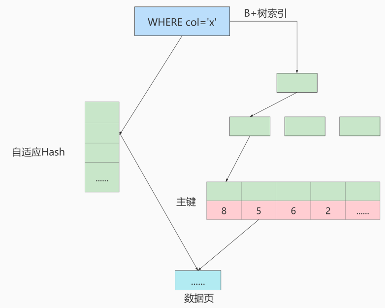
采用自适应 Hash 索引目的是方便根据 SQL 的查询条件加速定位到叶子节点，特别是当 B+ 树比较深的时 候，通过自适应 Hash 索引可以明显提高数据的检索效率。
我们可以通过 innodb_adaptive_hash_index 变量来查看是否开启了自适应 Hash，比如：
1 | mysql> show variables like '%adaptive_hash_index'; |
二叉搜索树
如果我们利用二叉树作为索引结构，那么磁盘的IO次数和索引树的高度是相关的。
二叉搜索树的特点
- 一个节点只能有两个子节点，也就是一个节点度不能超过2
- 左子节点 < 本节点; 右子节点 >= 本节点，比我大的向右，比我小的向左
查找规则


但是特殊情况，就是有时候二叉树的深度非常大，比如：

为了提高查询效率，就需要 减少磁盘IO数 。为了减少磁盘IO的次数，就需要尽量 降低树的高度 ，需要把 原来“瘦高”的树结构变的“矮胖”，树的每层的分叉越多越好。
AVL树

每访问一次节点就需要进行一次磁盘 I/O 操作，对于上面的树来说，我们需要进行 5次 I/O 操作。虽然平衡二叉树的效率高，但是树的深度也同样高，这就意味着磁盘 I/O 操作次数多，会影响整体数据查询的效率。
针对同样的数据，如果我们把二叉树改成 M 叉树 （M>2）呢？当 M=3 时，同样的 31 个节点可以由下面 的三叉树来进行存储：

你能看到此时树的高度降低了，当数据量 N 大的时候，以及树的分叉树 M 大的时候，M叉树的高度会远小于二叉树的高度 (M > 2)。所以，我们需要把 `树从“瘦高” 变 “矮胖”。
B-Tree
B 树的英文是 Balance Tree，也就是 多路平衡查找树。简写为 B-Tree。它的高度远小于平衡二叉树的高度。
B 树的结构如下图所示：

一个 M 阶的 B 树（M>2）有以下的特性：
- 根节点的儿子数的范围是 [2,M]。
- 每个中间节点包含 k-1 个关键字和 k 个孩子，孩子的数量 = 关键字的数量 +1，k 的取值范围为 [ceil(M/2), M]。
- 叶子节点包括 k-1 个关键字（叶子节点没有孩子），k 的取值范围为 [ceil(M/2), M]。
- 假设中间节点节点的关键字为：Key[1], Key[2], …, Key[k-1]，且关键字按照升序排序，即 Key[i]<Key[i+1]。此时 k-1 个关键字相当于划分了 k 个范围，也就是对应着 k 个指针，即为：P[1], P[2], …, P[k]，其中 P[1] 指向关键字小于 Key[1] 的子树，P[i] 指向关键字属于 (Key[i-1], Key[i]) 的子树，P[k] 指向关键字大于 Key[k-1] 的子树。
- 所有叶子节点位于同一层。
上面那张图所表示的 B 树就是一棵 3 阶的 B 树。我们可以看下磁盘块 2，里面的关键字为（8，12），它 有 3 个孩子 (3，5)，(9，10) 和 (13，15)，你能看到 (3，5) 小于 8，(9，10) 在 8 和 12 之间，而 (13，15) 大于 12，刚好符合刚才我们给出的特征。
然后我们来看下如何用 B 树进行查找。假设我们想要 查找的关键字是 9 ，那么步骤可以分为以下几步：
- 我们与根节点的关键字 (17，35）进行比较，9 小于 17 那么得到指针 P1；
- 按照指针 P1 找到磁盘块 2，关键字为（8，12），因为 9 在 8 和 12 之间，所以我们得到指针 P2；
- 按照指针 P2 找到磁盘块 6，关键字为（9，10），然后我们找到了关键字 9。
你能看出来在 B 树的搜索过程中，我们比较的次数并不少，但如果把数据读取出来然后在内存中进行比 较，这个时间就是可以忽略不计的。而读取磁盘块本身需要进行 I/O 操作，消耗的时间比在内存中进行 比较所需要的时间要多，是数据查找用时的重要因素。 B 树相比于平衡二叉树来说磁盘 I/O 操作要少 ， 在数据查询中比平衡二叉树效率要高。所以 只要树的高度足够低，IO次数足够少，就可以提高查询性能 。

B+Tree
B+Tree是一种多路搜索树，基于B树做出了改进，主流的DBMS都支持B+Tree的索引方式，相比于B-Tree，B+Tree更适合文件索引系统
B+ 树和 B 树的差异在于以下几点：
- 有 k 个孩子的节点就有 k 个关键字。也就是孩子数量 = 关键字数，而 B 树中，孩子数量 = 关键字数 +1。
- 非叶子节点的关键字也会同时存在在子节点中，并且是在子节点中所有关键字的最大（或最 小）。
- 非叶子节点仅用于索引，不保存数据记录，跟记录有关的信息都放在叶子节点中。而 B 树中， 非 叶子节点既保存索引，也保存数据记录 。
- 所有关键字都在叶子节点出现，叶子节点构成一个有序链表，而且叶子节点本身按照关键字的大 小从小到大顺序链接。


B 树和 B+ 树都可以作为索引的数据结构，在 MySQL 中采用的是 B+ 树。 但B树和B+树各有自己的应用场景，不能说B+树完全比B树好，反之亦然。
思考题：为了减少IO，索引树会一次性加载吗？
思考题：B+树的存储能力如何？为何说一般查找行记录，最多只需1~3次磁盘IO
思考题：为什么说B+树比B-树更适合实际应用中操作系统的文件索引和数据库索引？
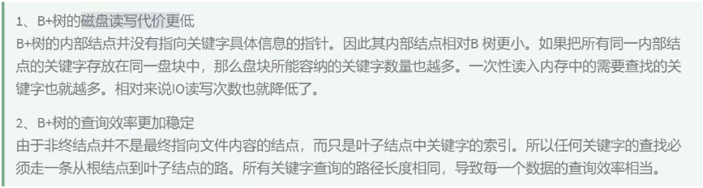
思考题：Hash 索引与 B+ 树索引的区别

小结

附录：算法的时间复杂度
同一问题可用不同算法解决，而一个算法的质量优劣将影响到算法乃至程序的效率。算法分析的目的在 于选择合适算法和改进算法。
InnoDB数据存储结构
数据库的存储结构：页
索引结构给我们提供了高效的索引方式，不过索引信息和数据记录都是保存在文件上的，确切说是存储在页结构中。另一方面，索引是在存储引擎中实现的，MySQL服务器上的存储引擎负责对表中数据的读写工作。不同的存储引擎的存放的格式一般是不同的，甚至有的存储引擎不用磁盘来存储数据（Memory）
磁盘与内存交互基本单位：页
InnoDB将数据划分为若干个也，InnoDB中页的大小默认是16KB。
以页作为磁盘和内存之间交互的基本单位，也就是一次最少从磁盘中读取16KB的内容到内存中，一次最少把内存中的16KB内容刷新到磁盘中。也就是说，数据库中，不论是读一行还是读多行，都是将这些行所在的页进行加载，也就是说，数据库管理存储空间的基本单位是页，数据库I/O操作的最小单位是页，一个页中可以存储多个行记录。

页结构的概述
这些页可以不在物理结构上相连，只要通过双向链表相关联即可，每个数据页中的记录会按照主键值从小到大顺序组成一个单向链表，每个数据页都会为存储在它里面的记录生成一个页目录，在通过主键查找某条记录的时候可以在页目录中使用二分法快速定位到对应的槽，然后再遍历槽对应分组中的记录即可快速找到指定的目录。
页的大小
不同的数据库管理系统（简称DBMS）的页大小不同。比如在 MySQL 的 InnoDB 存储引擎中，默认页的大小是 16KB，我们可以通过下面的命令来进行查看：
1 | show variables like '%innodb_page_size%' |
SQL Server 中页的大小为 8KB，而在 Oracle 中我们用术语 “块“ （Block）来表示 “页”，Oracle 支持的快大小为2KB, 4KB, 8KB, 16KB, 32KB 和 64KB。
页的上层结构
另外在数据库中，还存在着区（Extent）、段（Segment）和表空间（Tablespace）的概念。行、页、区、段、表空间的关系如下图所示：


页的内部结构
页如果按类型划分的话，常见的有 数据页（保存B+树节点）、系统表、Undo 页 和 事务数据页 等。数据页是我们最常使用的页。
数据页的 16KB 大小的存储空间被划分为七个部分，分别是文件头（File Header）、页头（Page Header）、最大最小记录（Infimum + supremum）、用户记录（User Records）、空闲空间（Free Space）、页目录（Page Directory）和文件尾（File Tailer）。
页结构的示意图如下所示：

如下表所示：
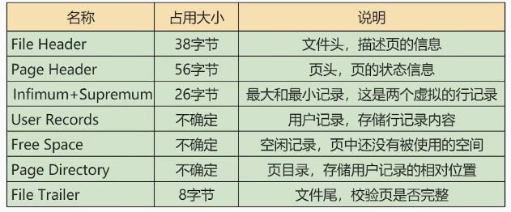
我们可以把这7个结构分为3个部分。
第一部分：File Header (文件头部) 和 File Trailer (文件尾部)
第二部分：User Records (用户记录)、最大最小记录、Free Space (空闲空间)
第三部分：Page Directory (页目录) 和 Page Header (页面头部)
从数据库页的角度看B+树如何查询
一颗B+树按照字节类型可以分为两部分：
- 叶子节点，B+ 树最底层的节点，节点的高度为0，存储行记录。
- 非叶子节点，节点的高度大于0，存储索引键和页面指针，并不存储行记录本身。
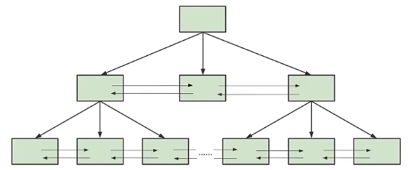
当我们从页结构来理解 B+ 树的结构的时候，可以帮我们理解一些通过索引进行检索的原理：
B+树是如何进行记录检索的
如果通过B+树的索引查询行记录，首先是从B+树的根开始，逐层检索，直到找到叶子结点，也就是找到对应的数据页为止，将数据页加载到内存中，页目录中的槽采用二分查找的方式，先找到一个祖略的记录分组，然后再在分组中通过链表遍历的方式查找记录
普通索引和唯一索引在查询效率上有什么不同
唯一索引就是在普通索引上增加了约束性，也就是关键字唯一，找到了关键字就停止检索。而普通索引，可能存在用户记录中的关键字相同的情况，根据页结构的原理，当我们读取一条记录的时候，不是将这条记录从索引中读取出来，而是将这个记录所在的页加载到内存中进行读取，InnoDB存储引擎的页大小为16kb，在一个页中可能存着上千个记录，因此在普通索引的字段上进行查找也就是在内存中多几次判断下一条记录的操作。对于CPU来说，这些操作所消耗的时间可以忽略。所以对一个索引字段进行检索，采用普通索引还是唯一索引在检索效率上基本没有差别。
InnoDB行格式 (或记录格式)
区、段与碎片区
区

段

碎片区

区的分类
区大体上可以分为4种类型：
- 空闲的区 (FREE) : 现在还没有用到这个区中的任何页面。
- 有剩余空间的碎片区 (FREE_FRAG)：表示碎片区中还有可用的页面。
- 没有剩余空间的碎片区 (FULL_FRAG)：表示碎片区中的所有页面都被使用，没有空闲页面。
- 附属于某个段的区 (FSEG)：每一个索引都可以分为叶子节点段和非叶子节点段。
处于FREE、FREE_FRAG 以及 FULL_FRAG 这三种状态的区都是独立的，直属于表空间。而处于 FSEG 状态的区是附属于某个段的。
如果把表空间比作是一个集团军，段就相当于师，区就相当于团。一般的团都是隶属于某个师的，就像是处于 FSEG 的区全部隶属于某个段，而处于 FREE、FREE_FRAG 以及 FULL_FRAG 这三种状态的区却直接隶属于表空间，就像独立团直接听命于军部一样。
表空间

独立表空间
独立表空间，即每张表有一个独立的表空间，也就是数据和索引信息都会保存在自己的表空间中。独立的表空间 (即：单表) 可以在不同的数据库之间进行 迁移。
空间可以回收 (DROP TABLE 操作可自动回收表空间；其他情况，表空间不能自己回收) 。如果对于统计分析或是日志表，删除大量数据后可以通过：alter table TableName engine=innodb; 回收不用的空间。对于使用独立表空间的表，不管怎么删除，表空间的碎片不会太严重的影响性能，而且还有机会处理。
独立表空间结构
独立表空间由段、区、页组成。
真实表空间对应的文件大小
我们到数据目录里看，会发现一个新建的表对应的 .ibd 文件只占用了 96K，才6个页面大小 (MySQL5.7中)，这是因为一开始表空间占用的空间很小，因为表里边都没有数据。不过别忘了这些 .ibd 文件是自扩展的，随着表中数据的增多，表空间对应的文件也逐渐增大。
查看 InnoDB 的表空间类型：
1 | show variables like 'innodb_file_per_table' |
你能看到 innodb_file_per_table=ON, 这就意味着每张表都会单词保存一个 .ibd 文件。
系统表空间
系统表空间的结构和独立表空间基本类似，只不过由于整个MySQL进程只有一个系统表空间，在系统表空间中会额外记录一些有关整个系统信息的页面，这部分是独立表空间中没有的。
InnoDB数据字典

删除这些数据并不是我们使用 INSERT 语句插入的用户数据，实际上是为了更好的管理我们这些用户数据而不得以引入的一些额外数据，这些数据页称为 元数据。InnoDB 存储引擎特意定义了一些列的 内部系统表 (internal system table) 来记录这些元数据：

这些系统表也称为 数据字典，它们都是以 B+ 树的形式保存在系统表空间的某个页面中。其中 SYS_TABLES、SYS_COLUMNS、SYS_INDEXES、SYS_FIELDS 这四个表尤其重要，称之为基本系统表 (basic system tables) ，我们先看看这4个表的结构：


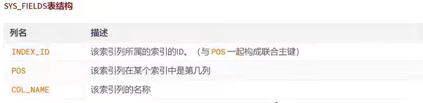
注意：用户不能直接访问 InnoDB 的这些内部系统表，除非你直接去解析系统表空间对应文件系统上的文件。不过考虑到查看这些表的内容可能有助于大家分析问题，所以在系统数据库 information_schema 中提供了一些以 innodb_sys 开头的表:
1 | USE information_schema; |
1 | SHOW TABLES LIKE 'innodb_sys%'; |
在 information_scheme 数据库中的这些以 INNODB_SYS 开头的表并不是真正的内部系统表 (内部系统表就是我们上边以 SYS 开头的那些表)，而是在存储引擎启动时读取这些以 SYS 开头的系统表，然后填充到这些以 INNODB_SYS 开头的表中。以 INNODB_SYS 开头的表和以 SYS 开头的表中的字段并不完全一样，但仅供大家参考已经足矣。
数据页加载的三种方式
InnoDB从磁盘中读取数据 最小单位 是数据页。而你想得到的 id = xxx 的数据，就是这个数据页众多行中的一行。
对于MySQL存放的数据，逻辑概念上我们称之为表，在磁盘等物理层面而言是按 数据页 形式进行存放的，当其加载到 MySQL 中我们称之为 缓存页。
如果缓冲池没有该页数据，那么缓冲池有以下三种读取数据的方式，每种方式的读取速率是不同的：
1. 内存读取
如果该数据存在于内存中，基本上执行时间在 1ms 左右，效率还是很高的。

2. 随机读取


3. 顺序读取
性能分析工具的使用
在数据库调优中，我们的目标是 响应时间更快, 吞吐量更大 。利用宏观的监控工具和微观的日志分析可以帮我们快速找到调优的思路和方式。
数据库服务器的优化步骤
当我们遇到数据库调优问题的时候，该如何思考呢？这里把思考的流程整理成下面这张图。
整个流程划分成了 观察（Show status） 和 行动（Action） 两个部分。字母 S 的部分代表观察（会使 用相应的分析工具），字母 A 代表的部分是行动（对应分析可以采取的行动）。
我们可以通过观察了解数据库整体的运行状态，通过性能分析工具可以让我们了解执行慢的SQL都有哪些，查看具体的SQL执行计划，甚至是SQL执行中的每一步的成本代价，这样才能定位问题所在，找到了问题，再采取相应的行动。
详细解释一下这张图：
查看系统性能参数
在MySQL中，可以使用 SHOW STATUS 语句查询一些MySQL数据库服务器的性能参数、执行频率。
SHOW STATUS语句语法如下：
1 | SHOW [GLOBAL|SESSION] STATUS LIKE '参数'; |
一些常用的性能参数如下：
- Connections：连接MySQL服务器的次数。
- Uptime：MySQL服务器的上线时间。
- Slow_queries：慢查询的次数。
- Innodb_rows_read：Select查询返回的行数
- Innodb_rows_inserted：执行INSERT操作插入的行数
- Innodb_rows_updated：执行UPDATE操作更新的 行数
- Innodb_rows_deleted：执行DELETE操作删除的行数
- Com_select：查询操作的次数。
- Com_insert：插入操作的次数。对于批量插入的 INSERT 操作，只累加一次。
- Com_update：更新操作 的次数。
- Com_delete：删除操作的次数。
若查询MySQL服务器的连接次数，则可以执行如下语句:
1 | SHOW STATUS LIKE 'Connections'; |
若查询服务器工作时间，则可以执行如下语句:
1 | SHOW STATUS LIKE 'Uptime'; |
若查询MySQL服务器的慢查询次数，则可以执行如下语句:
1 | SHOW STATUS LIKE 'Slow_queries'; |
慢查询次数参数可以结合慢查询日志找出慢查询语句，然后针对慢查询语句进行表结构优化或者查询语句优化。
再比如，如下的指令可以查看相关的指令情况：
1 | SHOW STATUS LIKE 'Innodb_rows_%'; |
统计SQL的查询成本: last_query_cost
一条SQL查询语句在执行前需要查询执行计划，如果存在多种执行计划的话，MySQL会计算每个执行计划所需要的成本，从中选择成本最小的一个作为最终执行的执行计划。
如果我们想要查看某条SQL语句的查询成本，可以在执行完这条SQL语句之后，通过查看当前会话中的last_query_cost变量值来得到当前查询的成本。它通常也是我们评价一个查询的执行效率的一个常用指标。这个查询成本对应的是SQL 语句所需要读取的读页的数量。
我们依然使用第8章的 student_info 表为例：
1 | CREATE TABLE `student_info` ( |
如果我们想要查询 id=900001 的记录，然后看下查询成本，我们可以直接在聚簇索引上进行查找：
1 | SELECT student_id, class_id, NAME, create_time FROM student_info WHERE id = 900001; |
运行结果（1 条记录，运行时间为 0.042s ）
然后再看下查询优化器的成本，实际上我们只需要检索一个页即可：
1 | SHOW STATUS LIKE 'last_query_cost'; |
如果我们想要查询 id 在 900001 到 9000100 之间的学生记录呢？
1 | SELECT student_id, class_id, NAME, create_time FROM student_info WHERE id BETWEEN 900001 AND 900100; |
运行结果（100 条记录，运行时间为 0.046s ）：
然后再看下查询优化器的成本，这时我们大概需要进行 20 个页的查询。
1 | SHOW STATUS LIKE 'last_query_cost'; |
你能看到页的数量是刚才的 20 倍，但是查询的效率并没有明显的变化，实际上这两个 SQL 查询的时间 基本上一样，就是因为采用了顺序读取的方式将页面一次性加载到缓冲池中，然后再进行查找。虽然 页 数量（last_query_cost）增加了不少 ，但是通过缓冲池的机制，并 没有增加多少查询时间 。
使用场景：它对于比较开销是非常有用的，特别是我们有好几种查询方式可选的时候。
SQL查询时一个动态的过程，从页加载的角度来看，我们可以得到以下两点结论：
位置决定效率。如果页就在数据库缓冲池中，那么效率是最高的，否则还需要从内存或者磁盘中进行读取，当然针对单个页的读取来说，如果页存在于内存中，会比在磁盘中读取效率高很多。批量决定效率。如果我们从磁盘中对单一页进行随机读，那么效率是很低的(差不多10ms)，而采用顺序读取的方式，批量对页进行读取，平均一页的读取效率就会提升很多，甚至要快于单个页面在内存中的随机读取。所以说，遇到I/O并不用担心，方法找对了，效率还是很高的。我们首先要考虑数据存放的位置，如果是进程使用的数据就要尽量放到
缓冲池中，其次我们可以充分利用磁盘的吞吐能力，一次性批量读取数据，这样单个页的读取效率也就得到了提升。
定位执行慢的 SQL：慢查询日志

开启慢查询日志参数
1. 开启 slow_query_log
在使用前，我们需要先查下慢查询是否已经开启，使用下面这条命令即可：
1 | mysql > show variables like '%slow_query_log'; |
我们可以看到 slow_query_log=OFF，我们可以把慢查询日志打开，注意设置变量值的时候需要使用 global，否则会报错：
1 | mysql > set global slow_query_log='ON'; |
然后我们再来查看下慢查询日志是否开启，以及慢查询日志文件的位置：
你能看到这时慢查询分析已经开启，同时文件保存在 /var/lib/mysql/atguigu02-slow.log 文件 中。
2. 修改 long_query_time 阈值
接下来我们来看下慢查询的时间阈值设置，使用如下命令：
1 | mysql > show variables like '%long_query_time%'; |
这里如果我们想把时间缩短，比如设置为 1 秒，可以这样设置：
1 | #测试发现：设置global的方式对当前session的long_query_time失效。对新连接的客户端有效。所以可以一并 |
补充：配置文件中一并设置参数
如下的方式相较于前面的命令行方式，可以看做是永久设置的方式。
修改 my.cnf 文件，[mysqld] 下增加或修改参数 long_query_time、slow_query_log 和 slow_query_log_file 后，然后重启 MySQL 服务器。
1 | [mysqld] |
如果不指定存储路径，慢查询日志默认存储到MySQL数据库的数据文件夹下。如果不指定文件名，默认文件名为hostname_slow.log。
查看慢查询数目
查询当前系统中有多少条慢查询记录
1 | SHOW GLOBAL STATUS LIKE '%Slow_queries%'; |
案例演示
步骤1. 建表
1 | CREATE TABLE `student` ( |
步骤2：设置参数 log_bin_trust_function_creators
创建函数，假如报错：
1 | This function has none of DETERMINISTIC...... |
- 命令开启：允许创建函数设置：
1 | set global log_bin_trust_function_creators=1; # 不加global只是当前窗口有效。 |
步骤3：创建函数
随机产生字符串：（同上一章）
1 | DELIMITER // |
产生随机数值：（同上一章）
1 | DELIMITER // |
步骤4：创建存储过程
1 | DELIMITER // |
步骤5：调用存储过程
1 | #调用刚刚写好的函数, 4000000条记录,从100001号开始 |
测试及分析
1. 测试
1 | SELECT * FROM student WHERE stuno = 3455655; |
从上面的结果可以看出来，查询学生编号为“3455655”的学生信息花费时间为2.09秒。查询学生姓名为 “oQmLUr”的学生信息花费时间为2.39秒。已经达到了秒的数量级，说明目前查询效率是比较低的，下面 的小节我们分析一下原因。
2. 分析
1 | show status like 'slow_queries'; |
慢查询日志分析工具：mysqldumpslow
在生产环境中，如果要手工分析日志，查找、分析SQL，显然是个体力活，MySQL提供了日志分析工具 mysqldumpslow 。
查看mysqldumpslow的帮助信息
1 | mysqldumpslow --help |
mysqldumpslow 命令的具体参数如下：
- -a: 不将数字抽象成N，字符串抽象成S
- -s: 是表示按照何种方式排序：
- c: 访问次数
- l: 锁定时间
- r: 返回记录
- t: 查询时间
- al:平均锁定时间
- ar:平均返回记录数
- at:平均查询时间 （默认方式）
- ac:平均查询次数
- -t: 即为返回前面多少条的数据；
- -g: 后边搭配一个正则匹配模式，大小写不敏感的；
举例：我们想要按照查询时间排序，查看前五条 SQL 语句，这样写即可：
1 | mysqldumpslow -s t -t 5 /var/lib/mysql/atguigu01-slow.log |
1 | [root@bogon ~]# mysqldumpslow -s t -t 5 /var/lib/mysql/atguigu01-slow.log |
工作常用参考：
1 | 得到返回记录集最多的10个SQL |
关闭慢查询日志
MySQL服务器停止慢查询日志功能有两种方法：
方式1：永久性方式
1 | [mysqld] |
或者，把slow_query_log一项注释掉 或 删除
1 | [mysqld] |
重启MySQL服务，执行如下语句查询慢日志功能。
1 | SHOW VARIABLES LIKE '%slow%'; #查询慢查询日志所在目录 |
方式2：临时性方式
使用SET语句来设置。
（1）停止MySQL慢查询日志功能，具体SQL语句如下。
1 | SET GLOBAL slow_query_log=off; |
（2）重启MySQL服务，使用SHOW语句查询慢查询日志功能信息，具体SQL语句如下。
1 | SHOW VARIABLES LIKE '%slow%'; |
删除慢查询日志
使用SHOW语句显示慢查询日志信息，具体SQL语句如下。
1 | SHOW VARIABLES LIKE `slow_query_log%`; |

从执行结果可以看出，慢查询日志的目录默认为MySQL的数据目录，在该目录下 手动删除慢查询日志文件 即可。
使用命令 mysqladmin flush-logs 来重新生成查询日志文件，具体命令如下，执行完毕会在数据目录下重新生成慢查询日志文件。
1 | mysqladmin -uroot -p flush-logs slow |
提示
慢查询日志都是使用mysqladmin flush-logs命令来删除重建的。使用时一定要注意，一旦执行了这个命令，慢查询日志都只存在新的日志文件中，如果需要旧的查询日志，就必须事先备份。
查看 SQL 执行成本：SHOW PROFILE
show profile 在《逻辑架构》章节中讲过，这里作为复习。
show profile 是 MySQL 提供的可以用来分析当前会话中 SQL 都做了什么、执行的资源消耗工具的情况，可用于 sql 调优的测量。默认情况下处于关闭状态，并保存最近15次的运行结果。
我们可以在会话级别开启这个功能。
1 | mysql > show variables like 'profiling'; |
通过设置 profiling=’ON’ 来开启 show profile:
1 | mysql > set profiling = 'ON'; |
然后执行相关的查询语句。接着看下当前会话都有哪些 profiles，使用下面这条命令：
1 | mysql > show profiles; |
你能看到当前会话一共有 2 个查询。如果我们想要查看最近一次查询的开销，可以使用：
1 | mysql > show profile; |
1 | mysql> show profile cpu,block io for query 2 |
show profile的常用查询参数：
① ALL：显示所有的开销信息。
② BLOCK IO：显示块IO开销。
③ CONTEXT SWITCHES：上下文切换开销。
④ CPU：显示CPU开销信息。
⑤ IPC：显示发送和接收开销信息。
⑥ MEMORY：显示内存开销信 息。
⑦ PAGE FAULTS：显示页面错误开销信息。
⑧ SOURCE：显示和Source_function，Source_file， Source_line相关的开销信息。
⑨ SWAPS：显示交换次数开销信息。
日常开发需注意的结论：
① converting HEAP to MyISAM: 查询结果太大，内存不够，数据往磁盘上搬了。
② Creating tmp table：创建临时表。先拷贝数据到临时表，用完后再删除临时表。
③ Copying to tmp table on disk：把内存中临时表复制到磁盘上，警惕！
④ locked。
如果在show profile诊断结果中出现了以上4条结果中的任何一条，则sql语句需要优化。
注意：
不过SHOW PROFILE命令将被启用，我们可以从 information_schema 中的 profiling 数据表进行查看。
分析查询语句：EXPLAIN
概述
能做什么？
- 表的读取顺序
- 数据读取操作的操作类型
- 哪些索引可以使用
- 哪些索引被实际使用
- 表之间的引用
- 每张表有多少行被优化器查询
基本语法
EXPLAIN 或 DESCRIBE语句的语法形式如下：
1 | EXPLAIN SELECT select_options |
如果我们想看看某个查询的执行计划的话，可以在具体的查询语句前边加一个 EXPLAIN ，就像这样：
1 | mysql> EXPLAIN SELECT 1; |

EXPLAIN 语句输出的各个列的作用如下：
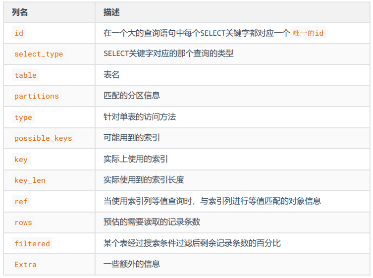
数据准备
1. 建表
1 | CREATE TABLE s1 ( |
1 | CREATE TABLE s2 ( |
2. 设置参数 log_bin_trust_function_creators
创建函数，假如报错，需开启如下命令：允许创建函数设置：
1 | set global log_bin_trust_function_creators=1; # 不加global只是当前窗口有效。 |
3. 创建函数
1 | DELIMITER // |
4. 创建存储过程
创建往s1表中插入数据的存储过程：
1 | DELIMITER // |
创建往s2表中插入数据的存储过程：
1 | DELIMITER // |
5. 调用存储过程
s1表数据的添加：加入1万条记录：
1 | CALL insert_s1(10001,10000); |
s2表数据的添加：加入1万条记录：
1 | CALL insert_s2(10001,10000); |
EXPLAIN各列作用
为了让大家有比较好的体验，我们调整了下 EXPLAIN 输出列的顺序。
1. table
不论我们的查询语句有多复杂，里边儿 包含了多少个表 ，到最后也是需要对每个表进行 单表访问 的，所 以MySQL规定EXPLAIN语句输出的每条记录都对应着某个单表的访问方法，该条记录的table列代表着该 表的表名（有时不是真实的表名字，可能是简称）。
1 | mysql > EXPLAIN SELECT * FROM s1; |
这个查询语句只涉及对s1表的单表查询，所以 EXPLAIN 输出中只有一条记录，其中的table列的值为s1，表明这条记录是用来说明对s1表的单表访问方法的。
下边我们看一个连接查询的执行计划
1 | mysql > EXPLAIN SELECT * FROM s1 INNER JOIN s2; |
可以看出这个连接查询的执行计划中有两条记录，这两条记录的table列分别是s1和s2，这两条记录用来分别说明对s1表和s2表的访问方法是什么。
2. id
我们写的查询语句一般都以 SELECT 关键字开头，比较简单的查询语句里只有一个 SELECT 关键字，比 如下边这个查询语句：
1 | SELECT * FROM s1 WHERE key1 = 'a'; |
稍微复杂一点的连接查询中也只有一个 SELECT 关键字，比如：
1 | SELECT * FROM s1 INNER JOIN s2 |
但是下边两种情况下在一条查询语句中会出现多个SELECT关键字：
1 | mysql > EXPLAIN SELECT * FROM s1 WHERE key1 = 'a'; |
对于连接查询来说，一个SELECT关键字后边的FROM字句中可以跟随多个表，所以在连接查询的执行计划中，每个表都会对应一条记录，但是这些记录的id值都是相同的，比如：
1 | mysql> EXPLAIN SELECT * FROM s1 INNER JOIN s2; |
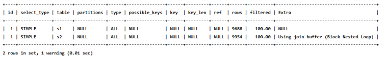
可以看到，上述连接查询中参与连接的s1和s2表分别对应一条记录，但是这两条记录对应的id都是1。这里需要大家记住的是，在连接查询的执行计划中，每个表都会对应一条记录，这些记录的id列的值是相同的，出现在前边的表表示驱动表，出现在后面的表表示被驱动表。所以从上边的EXPLAIN输出中我们可以看到，查询优化器准备让s1表作为驱动表，让s2表作为被驱动表来执行查询。
对于包含子查询的查询语句来说，就可能涉及多个SELECT关键字，所以在**包含子查询的查询语句的执行计划中，每个SELECT关键字都会对应一个唯一的id值，比如这样：
1 | mysql> EXPLAIN SELECT * FROM s1 WHERE key1 IN (SELECT key1 FROM s2) OR key3 = 'a'; |

1 | # 查询优化器可能对涉及子查询的查询语句进行重写，转变为多表查询的操作。 |
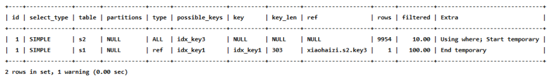
可以看到，虽然我们的查询语句是一个子查询，但是执行计划中s1和s2表对应的记录的id值全部是1，这就表明查询优化器将子查询转换为了连接查询。
对于包含UNION子句的查询语句来说，每个SELECT关键字对应一个id值也是没错的，不过还是有点儿特别的东西，比方说下边的查询：
1 | # Union去重 |
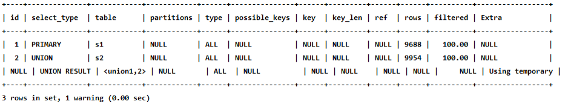
1 | mysql> EXPLAIN SELECT * FROM s1 UNION ALL SELECT * FROM s2; |
小结:
- id如果相同，可以认为是一组，从上往下顺序执行
- 在所有组中，id值越大，优先级越高，越先执行
- 关注点：id号每个号码，表示一趟独立的查询, 一个sql的查询趟数越少越好
3. select_type

具体分析如下：
SIMPLE
查询语句中不包含
UNION或者子查询的查询都算作是SIMPLE类型，比方说下边这个单表查询select_type的值就是SIMPLE:1
mysql> EXPLAIN SELECT * FROM s1;
当然，连接查询也算是 SIMPLE 类型，比如：
1
mysql> EXPLAIN SELECT * FROM s1 INNER JOIN s2;
PRIMARY
对于包含
UNION、UNION ALL或者子查询的大查询来说，它是由几个小查询组成的，其中最左边的那个查询的select_type的值就是PRIMARY,比方说：1
mysql> EXPLAIN SELECT * FROM s1 UNION SELECT * FROM s2;

从结果中可以看到，最左边的小查询
SELECT * FROM s1对应的是执行计划中的第一条记录，它select_type的值就是PRIMARY。UNION
对于包含
UNION或者UNION ALL的大查询来说，它是由几个小查询组成的，其中除了最左边的那个小查询意外，其余的小查询的select_type值就是UNION，可以对比上一个例子的效果。UNION RESULT
MySQL 选择使用临时表来完成
UNION查询的去重工作，针对该临时表的查询的select_type就是UNION RESULT, 例子上边有。SUBQUERY
如果包含子查询的查询语句不能够转为对应的
semi-join的形式，并且该子查询是不相关子查询，并且查询优化器决定采用将该子查询物化的方案来执行该子查询时，该子查询的第一个SELECT关键字代表的那个查询的select_type就是SUBQUERY，比如下边这个查询：1
mysql> EXPLAIN SELECT * FROM s1 WHERE key1 IN (SELECT key1 FROM s2) OR key3 = 'a';
DEPENDENT SUBQUERY
1
mysql> EXPLAIN SELECT * FROM s1 WHERE key1 IN (SELECT key1 FROM s2 WHERE s1.key2 = s2.key2) OR key3 = 'a';
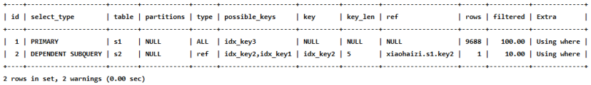
DEPENDENT UNION
1
mysql> EXPLAIN SELECT * FROM s1 WHERE key1 IN (SELECT key1 FROM s2 WHERE key1 = 'a' UNION SELECT key1 FROM s1 WHERE key1 = 'b');
DERIVED
1
mysql> EXPLAIN SELECT * FROM (SELECT key1, count(*) as c FROM s1 GROUP BY key1) AS derived_s1 where c > 1;
从执行计划中可以看出，id为2的记录就代表子查询的执行方式，它的select_type是DERIVED, 说明该子查询是以物化的方式执行的。id为1的记录代表外层查询，大家注意看它的table列显示的是derived2，表示该查询时针对将派生表物化之后的表进行查询的。
MATERIALIZED
当查询优化器在执行包含子查询的语句时，选择将子查询物化之后的外层查询进行连接查询时，该子查询对应的
select_type属性就是DERIVED，比如下边这个查询：1
mysql> EXPLAIN SELECT * FROM s1 WHERE key1 IN (SELECT key1 FROM s2);
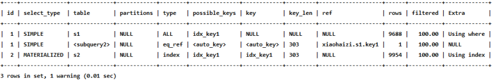
UNCACHEABLE SUBQUERY
不常用，就不多说了。
UNCACHEABLE UNION
不常用，就不多说了。
4. partitions (可略)
5. type
执行计划的一条记录就代表着MySQL对某个表的 执行查询时的访问方法 , 又称“访问类型”，其中的 type 列就表明了这个访问方法是啥，是较为重要的一个指标。比如，看到type列的值是ref，表明MySQL即将使用ref访问方法来执行对s1表的查询。
完整的访问方法如下： system ， const ， eq_ref ， ref ， fulltext ， ref_or_null ， index_merge ， unique_subquery ， index_subquery ， range ， index ， ALL 。
我们详细解释一下：
system当表中
只有一条记录并且该表使用的存储引擎的统计数据是精确的，比如MyISAM、Memory，那么对该表的访问方法就是system。比方说我们新建一个MyISAM表，并为其插入一条记录：1
2
3
4
5mysql> CREATE TABLE t(i int) Engine=MyISAM;
Query OK, 0 rows affected (0.05 sec)
mysql> INSERT INTO t VALUES(1);
Query OK, 1 row affected (0.01 sec)然后我们看一下查询这个表的执行计划：
1
mysql> EXPLAIN SELECT * FROM t;
可以看到
type列的值就是system了，测试，可以把表改成使用InnoDB存储引擎，试试看执行计划的
type列是什么。ALLconst
当我们根据主键或者唯一二级索引列与常数进行等值匹配时，对单表的访问方法就是
const, 比如：1
mysql> EXPLAIN SELECT * FROM s1 WHERE id = 10005;
eq_ref
在连接查询时，如果被驱动表是通过主键或者唯一二级索引列等值匹配的方式进行访问的（如果该主键或者唯一二级索引是联合索引的话，所有的索引列都必须进行等值比较）。则对该被驱动表的访问方法就是
eq_ref，比方说：1
mysql> EXPLAIN SELECT * FROM s1 INNER JOIN s2 ON s1.id = s2.id;
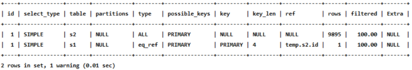
从执行计划的结果中可以看出，MySQL打算将s2作为驱动表，s1作为被驱动表，重点关注s1的访问 方法是
eq_ref，表明在访问s1表的时候可以通过主键的等值匹配来进行访问。ref
当通过普通的二级索引列与常量进行等值匹配时来查询某个表，那么对该表的访问方法就可能是
ref，比方说下边这个查询：1
mysql> EXPLAIN SELECT * FROM s1 WHERE key1 = 'a';
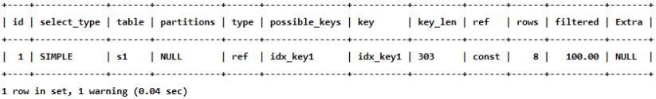
fulltext
全文检索
ref_or_null
当对普通二级索引进行等值匹配查询，该索引列的值也可以是
NULL值时，那么对该表的访问方法就可能是ref_or_null，比如说：1
mysql> EXPLAIN SELECT * FROM s1 WHERE key1 = 'a' OR key1 IS NULL;
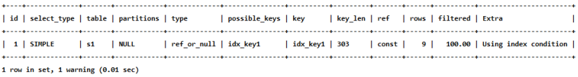
index_merge
一般情况下对于某个表的查询只能使用到一个索引，但单表访问方法时在某些场景下可以使用
Interseation、union、Sort-Union这三种索引合并的方式来执行查询。我们看一下执行计划中是怎么体现MySQL使用索引合并的方式来对某个表执行查询的：1
mysql> EXPLAIN SELECT * FROM s1 WHERE key1 = 'a' OR key3 = 'a';
从执行计划的
type列的值是index_merge就可以看出，MySQL 打算使用索引合并的方式来执行 对 s1 表的查询。unique_subquery
类似于两表连接中被驱动表的
eq_ref访问方法，unique_subquery是针对在一些包含IN子查询的查询语句中，如果查询优化器决定将IN子查询转换为EXISTS子查询，而且子查询可以使用到主键进行等值匹配的话，那么该子查询执行计划的type列的值就是unique_subquery，比如下边的这个查询语句：1
mysql> EXPLAIN SELECT * FROM s1 WHERE key2 IN (SELECT id FROM s2 where s1.key1 = s2.key1) OR key3 = 'a';
index_subquery
index_subquery与unique_subquery类似，只不过访问子查询中的表时使用的是普通的索引，比如这样：1
mysql> EXPLAIN SELECT * FROM s1 WHERE common_field IN (SELECT key3 FROM s2 where s1.key1 = s2.key1) OR key3 = 'a';
range
1
mysql> EXPLAIN SELECT * FROM s1 WHERE key1 IN ('a', 'b', 'c');
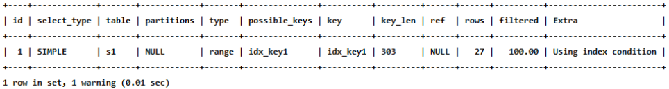
或者：
1
mysql> EXPLAIN SELECT * FROM s1 WHERE key1 > 'a' AND key1 < 'b';

index
当我们可以使用索引覆盖，但需要扫描全部的索引记录时，该表的访问方法就是
index，比如这样：1
mysql> EXPLAIN SELECT key_part2 FROM s1 WHERE key_part3 = 'a';
上述查询中的所有列表中只有key_part2 一个列，而且搜索条件中也只有 key_part3 一个列，这两个列又恰好包含在idx_key_part这个索引中，可是搜索条件key_part3不能直接使用该索引进行
ref和range方式的访问，只能扫描整个idx_key_part索引的记录，所以查询计划的type列的值就是index。再一次强调，对于使用InnoDB存储引擎的表来说，二级索引的记录只包含索引列和主键列的值，而聚簇索引中包含用户定义的全部列以及一些隐藏列，所以扫描二级索引的代价比直接全表扫描，也就是扫描聚簇索引的代价更低一些。
ALL
全表扫描
小结：
结果值从最好到最坏依次是：
system > const > eq_ref > ref > fulltext > ref_or_null > index_merge > unique_subquery > index_subquery > range > index > ALL
其中比较重要的几个提取出来（见上图中的粗体）。SQL 性能优化的目标：至少要达到 range 级别，要求是 ref 级别，最好是 consts级别。（阿里巴巴 开发手册要求）
6. possible_keys和key
在EXPLAIN语句输出的执行计划中，possible_keys列表示在某个查询语句中，对某个列执行单表查询时可能用到的索引有哪些。一般查询涉及到的字段上若存在索引，则该索引将被列出，但不一定被查询使用。key列表示实际用到的索引有哪些，如果为NULL，则没有使用索引。比方说下面这个查询：
1 | mysql> EXPLAIN SELECT * FROM s1 WHERE key1 > 'z' AND key3 = 'a'; |
上述执行计划的possible_keys列的值是idx_key1, idx_key3，表示该查询可能使用到idx_key1, idx_key3两个索引，然后key列的值是idx_key3，表示经过查询优化器计算使用不同索引的成本后，最后决定采用idx_key3。
7. key_len
实际使用到的索引长度 (即：字节数)
帮你检查是否充分的利用了索引，值越大越好，主要针对于联合索引，有一定的参考意义。
1 | mysql> EXPLAIN SELECT * FROM s1 WHERE id = 10005; |
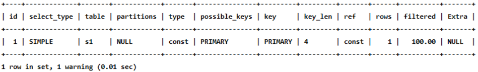
int 占用 4 个字节
1 | mysql> EXPLAIN SELECT * FROM s1 WHERE key2 = 10126; |
key2上有一个唯一性约束，是否为NULL占用一个字节，那么就是5个字节
1 | mysql> EXPLAIN SELECT * FROM s1 WHERE key1 = 'a'; |
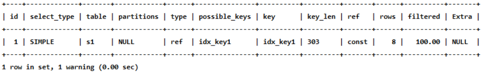
key1 VARCHAR(100) 一个字符占3个字节，100*3，是否为NULL占用一个字节，varchar的长度信息占两个字节。
1 | mysql> EXPLAIN SELECT * FROM s1 WHERE key_part1 = 'a'; |
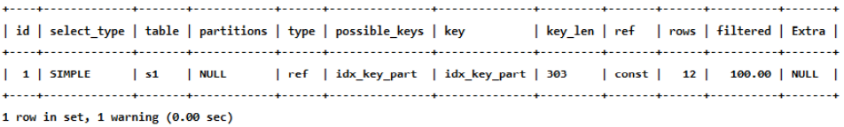
1 | mysql> EXPLAIN SELECT * FROM s1 WHERE key_part1 = 'a' AND key_part2 = 'b'; |
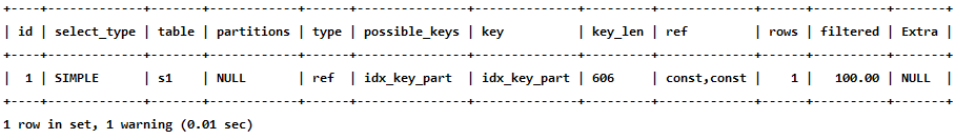
联合索引中可以比较，key_len=606的好于key_len=303
key_len的长度计算公式：
1 | varchar(10)变长字段且允许NULL = 10 * ( character set：utf8=3,gbk=2,latin1=1)+1(NULL)+2(变长字段) |
8. ref
1 | mysql> EXPLAIN SELECT * FROM s1 WHERE key1 = 'a'; |
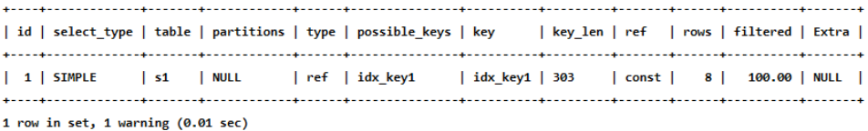
可以看到ref列的值是const，表明在使用idx_key1索引执行查询时，与key1列作等值匹配的对象是一个常数，当然有时候更复杂一点:
1 | mysql> EXPLAIN SELECT * FROM s1 INNER JOIN s2 ON s1.id = s2.id; |
1 | mysql> EXPLAIN SELECT * FROM s1 INNER JOIN s2 ON s2.key1 = UPPER(s1.key1); |
9. rows
预估的需要读取的记录条数，值越小越好。
1 | mysql> EXPLAIN SELECT * FROM s1 WHERE key1 > 'z'; |
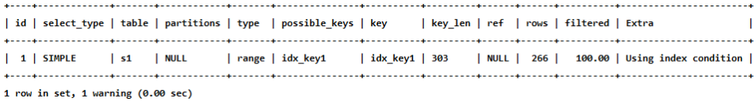
10. filtered
某个表经过搜索条件过滤后剩余记录条数的百分比
如果使用的是索引执行的单表扫描，那么计算时需要估计出满足除使用到对应索引的搜索条件外的其他搜索条件的记录有多少条。
1 | mysql> EXPLAIN SELECT * FROM s1 WHERE key1 > 'z' AND common_field = 'a'; |

对于单表查询来说，这个filtered的值没有什么意义，我们更关注在连接查询中驱动表对应的执行计划记录的filtered值，它决定了被驱动表要执行的次数 (即: rows * filtered)
1 | mysql> EXPLAIN SELECT * FROM s1 INNER JOIN s2 ON s1.key1 = s2.key1 WHERE s1.common_field = 'a'; |
从执行计划中可以看出来，查询优化器打算把s1作为驱动表，s2当做被驱动表。我们可以看到驱动表s1表的执行计划的rows列为9688，filtered列为10.00，这意味着驱动表s1的扇出值就是9688 x 10.00% = 968.8，这说明还要对被驱动表执行大约968次查询。
11. Extra
顾名思义，Extra列是用来说明一些额外信息的，包含不适合在其他列中显示但十分重要的额外信息。我们可以通过这些额外信息来更准确的理解MySQL到底将如何执行给定的查询语句。MySQL提供的额外信息有好几十个，我们就不一个一个介绍了，所以我们只挑选比较重要的额外信息介绍给大家。
No tables used
当查询语句没有
FROM子句时将会提示该额外信息，比如：1
mysql> EXPLAIN SELECT 1;

Impossible WHERE
当查询语句的
WHERE子句永远为FALSE时将会提示该额外信息1
mysql> EXPLAIN SELECT * FROM s1 WHERE 1 != 1;
Using where
1
mysql> EXPLAIN SELECT * FROM s1 WHERE common_field = 'a';
1
mysql> EXPLAIN SELECT * FROM s1 WHERE key1 = 'a' AND common_field = 'a';
No matching min/max row
当查询列表处有
MIN或者MAX聚合函数，但是并没有符合WHERE子句中的搜索条件的记录时。1
mysql> EXPLAIN SELECT MIN(key1) FROM s1 WHERE key1 = 'abcdefg';
Using index
当我们的查询列表以及搜索条件中只包含属于某个索引的列，也就是在可以使用覆盖索引的情况下，在
Extra列将会提示该额外信息。比方说下边这个查询中只需要用到idx_key1而不需要回表操作:1
mysql> EXPLAIN SELECT key1 FROM s1 WHERE key1 = 'a';
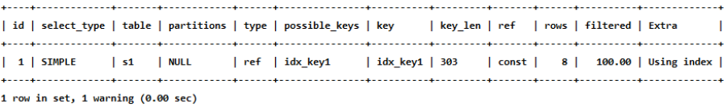
Using index condition
有些搜索条件中虽然出现了索引列，但却不能使用到索引，比如下边这个查询：
1
SELECT * FROM s1 WHERE key1 > 'z' AND key1 LIKE '%a';
1
mysql> EXPLAIN SELECT * FROM s1 WHERE key1 > 'z' AND key1 LIKE '%b';
Using join buffer (Block Nested Loop)
在连接查询执行过程中，当被驱动表不能有效的利用索引加快访问速度，MySQL一般会为其分配一块名叫
join buffer的内存块来加快查询速度，也就是我们所讲的基于块的嵌套循环算法。1
mysql> EXPLAIN SELECT * FROM s1 INNER JOIN s2 ON s1.common_field = s2.common_field;
Not exists
当我们使用左(外)连接时，如果
WHERE子句中包含要求被驱动表的某个列等于NULL值的搜索条件，而且那个列是不允许存储NULL值的，那么在该表的执行计划的Extra列就会提示这个信息：1
mysql> EXPLAIN SELECT * FROM s1 LEFT JOIN s2 ON s1.key1 = s2.key1 WHERE s2.id IS NULL;
Using intersect(…) 、 Using union(…) 和 Using sort_union(…)
如果执行计划的
Extra列出现了Using intersect(...)提示，说明准备使用Intersect索引合并的方式执行查询，括号中的...表示需要进行索引合并的索引名称；如果出现
Using union(...)提示，说明准备使用Union索引合并的方式执行查询;如果出现
Using sort_union(...)提示，说明准备使用Sort-Union索引合并的方式执行查询。1
mysql> EXPLAIN SELECT * FROM s1 WHERE key1 = 'a' OR key3 = 'a';
Zero limit
当我们的
LIMIT子句的参数为0时，表示压根儿不打算从表中读取任何记录，将会提示该额外信息1
mysql> EXPLAIN SELECT * FROM s1 LIMIT 0;

Using filesort
有一些情况下对结果集中的记录进行排序是可以使用到索引的。
1
mysql> EXPLAIN SELECT * FROM s1 ORDER BY key1 LIMIT 10;
1
mysql> EXPLAIN SELECT * FROM s1 ORDER BY common_field LIMIT 10;

需要注意的是，如果查询中需要使用
filesort的方式进行排序的记录非常多，那么这个过程是很耗费性能的，我们最好想办法将使用文件排序的执行方式改为索引进行排序。Using temporary

1
mysql> EXPLAIN SELECT DISTINCT common_field FROM s1;

再比如：
1
mysql> EXPLAIN SELECT common_field, COUNT(*) AS amount FROM s1 GROUP BY common_field;

执行计划中出现
Using temporary并不是一个好的征兆，因为建立与维护临时表要付出很大的成本的，所以我们最好能使用索引来替代掉使用临时表，比方说下边这个包含GROUP BY子句的查询就不需要使用临时表：1
mysql> EXPLAIN SELECT key1, COUNT(*) AS amount FROM s1 GROUP BY key1;

从
Extra的Using index的提示里我们可以看出，上述查询只需要扫描idx_key1索引就可以搞 定了，不再需要临时表了。
12. 小结
- EXPLAIN不考虑各种Cache
- EXPLAIN不能显示MySQL在执行查询时所作的优化工作
- EXPLAIN不会告诉你关于触发器、存储过程的信息或用户自定义函数对查询的影响情况
- 部分统计信息是估算的，并非精确值
EXPLAIN的进一步使用
EXPLAIN四种输出格式
这里谈谈EXPLAIN的输出格式。EXPLAIN可以输出四种格式： 传统格式 ，JSON格式 ， TREE格式 以及 可视化输出 。用户可以根据需要选择适用于自己的格式。
1. 传统格式
传统格式简单明了，输出是一个表格形式，概要说明查询计划。
1 | mysql> EXPLAIN SELECT s1.key1, s2.key1 FROM s1 LEFT JOIN s2 ON s1.key1 = s2.key1 WHERE s2.common_field IS NOT NULL; |
2. JSON格式
第1种格式中介绍的EXPLAIN语句输出中缺少了一个衡量执行好坏的重要属性 —— 成本。而JSON格式是四种格式里面输出信息最详尽的格式，里面包含了执行的成本信息。
- JSON格式：在EXPLAIN单词和真正的查询语句中间加上 FORMAT=JSON 。
1 | EXPLAIN FORMAT=JSON SELECT .... |
- EXPLAIN的Column与JSON的对应关系：(来源于MySQL 5.7文档)
这样我们就可以得到一个json格式的执行计划，里面包含该计划花费的成本。比如这样：
1 | mysql> EXPLAIN FORMAT=JSON SELECT * FROM s1 INNER JOIN s2 ON s1.key1 = s2.key2 WHERE s1.common_field = 'a'\G |

我们使用 # 后边跟随注释的形式为大家解释了 EXPLAIN FORMAT=JSON 语句的输出内容，但是大家可能 有疑问 “cost_info“ 里边的成本看着怪怪的，它们是怎么计算出来的？先看 s1 表的 “cost_info“ 部 分：
1 | "cost_info": { |
read_cost是由下边这两部分组成的：- IO 成本
- 检测 rows × (1 - filter) 条记录的 CPU 成本
小贴士： rows和filter都是我们前边介绍执行计划的输出列，在JSON格式的执行计划中，rows 相当于rows_examined_per_scan，filtered名称不变。
eval_cost是这样计算的：检测 rows × filter 条记录的成本。
prefix_cost就是单独查询 s1 表的成本，也就是：read_cost + eval_costdata_read_per_join表示在此次查询中需要读取的数据量。
对于 s2 表的 “cost_info“ 部分是这样的：
1 | "cost_info": { |
由于 s2 表是被驱动表，所以可能被读取多次，这里的read_cost 和 eval_cost 是访问多次 s2 表后累加起来的值，大家主要关注里边儿的 prefix_cost 的值代表的是整个连接查询预计的成本，也就是单次查询 s1 表和多次查询 s2 表后的成本的和，也就是：
1 | 968.80 + 193.76 + 2034.60 = 3197.16 |
3. TREE格式
TREE格式是8.0.16版本之后引入的新格式，主要根据查询的 各个部分之间的关系 和 各部分的执行顺序 来描述如何查询。
1 | EXPLAIN FORMAT=tree SELECT * FROM s1 INNER JOIN s2 ON s1.key1 = s2.key2 WHERE |
4. 可视化输出
可视化输出，可以通过MySQL Workbench可视化查看MySQL的执行计划。通过点击Workbench的放大镜图标，即可生成可视化的查询计划。
上图按从左到右的连接顺序显示表。红色框表示 全表扫描 ，而绿色框表示使用 索引查找 。对于每个表， 显示使用的索引。还要注意的是，每个表格的框上方是每个表访问所发现的行数的估计值以及访问该表的成本。
SHOW WARNINGS的使用
在我们使用EXPLAIN语句查看了某个查询的执行计划后，紧接着还可以使用SHOW WARNINGS语句查看与这个查询的执行计划有关的一些扩展信息，比如这样：
1 | mysql> EXPLAIN SELECT s1.key1, s2.key1 FROM s1 LEFT JOIN s2 ON s1.key1 = s2.key1 WHERE s2.common_field IS NOT NULL; |

1 | SHOW WARNINGS\G |
大家可以看到SHOW WARNINGS展示出来的信息有三个字段，分别是Level、Code、Message。我们最常见的就是Code为1003的信息，当Code值为1003时，Message字段展示的信息类似于查询优化器将我们的查询语句重写后的语句。比如我们上边的查询本来是一个左(外)连接查询，但是有一个s2.common_field IS NOT NULL的条件，这就会导致查询优化器把左(外)连接查询优化为内连接查询，从SHOW WARNINGS的Message字段也可以看出来，原本的LEFE JOIN已经变成了JOIN。
但是大家一定要注意，我们说Message字段展示的信息类似于查询优化器将我们的查询语句重写后的语句，并不是等价于，也就是说Message字段展示的信息并不是标准的查询语句，在很多情况下并不能直接拿到黑框框中运行，它只能作为帮助我们理解MySQL将如何执行查询语句的一个参考依据而已。
分析优化器执行计划：trace
1 | SET optimizer_trace="enabled=on",end_markers_in_json=on; |
开启后，可分析如下语句：
- SELECT
- INSERT
- REPLACE
- UPDATE
- DELETE
- EXPLAIN
- SET
- DECLARE
- CASE
- IF
- RETURN
- CALL
测试：执行如下SQL语句
1 | select * from student where id < 10; |
最后， 查询 information_schema.optimizer_trace 就可以知道MySQL是如何执行SQL的 ：
1 | select * from information_schema.optimizer_trace\G |
1 | *************************** 1. row *************************** |
MySQL监控分析视图-sys schema
Sys schema视图摘要
- 主机相关：以host_summary开头，主要汇总了IO延迟的信息。
- Innodb相关：以innodb开头，汇总了innodb buffer信息和事务等待innodb锁的信息。
- I/o相关：以io开头，汇总了等待I/O、I/O使用量情况。
- 内存使用情况：以memory开头，从主机、线程、事件等角度展示内存的使用情况
- 连接与会话信息：processlist和session相关视图，总结了会话相关信息。
- 表相关：以schema_table开头的视图，展示了表的统计信息。
- 索引信息：统计了索引的使用情况，包含冗余索引和未使用的索引情况。
- 语句相关：以statement开头，包含执行全表扫描、使用临时表、排序等的语句信息。
- 用户相关：以user开头的视图，统计了用户使用的文件I/O、执行语句统计信息。
- 等待事件相关信息：以wait开头，展示等待事件的延迟情况。
Sys schema视图使用场景
索引情况
1 | #1. 查询冗余索引 |
表相关
1 | # 1. 查询表的访问量 |
语句相关
1 | #1. 监控SQL执行的频率 |
IO相关
1 | #1. 查看消耗磁盘IO的文件 |
Innodb 相关
1 | #1. 行锁阻塞情况 |
小结
查询是数据库中最频繁的操作，提高查询速度可以有效地提高MySQL数据库的性能。通过对查询语句的分析可以了解查询语句的执行情况，找出查询语句执行的瓶颈，从而优化查询语句。
索引优化与查询优化
都有哪些维度可以进行数据库调优？简言之：
- 索引失效、没有充分利用到索引——建立索引
- 关联查询太多JOIN（设计缺陷或不得已的需求）——SQL优化
- 服务器调优及各个参数设置（缓冲、线程数等）——调整my.cnf
- 数据过多——分库分表
关于数据库调优的知识非常分散。不同的DBMS，不同的公司，不同的职位，不同的项目遇到的问题都不尽相同。这里我们分为三个章节进行细致讲解。
虽然SQL查询优化的技术有很多，但是大方向上完全可以分成物理查询优化和逻辑查询优化两大块。
- 物理查询优化是通过
索引和表连接方式等技术来进行优化，这里重点需要掌握索引的使用。 - 逻辑查询优化就是通过SQL
等价变换提升查询效率，直白一点就是说，换一种查询写法效率可能更高。
索引失效案例
全值匹配我最爱
最佳左前缀法则
在MySQL建立联合索引时会遵守最佳左前缀原则，即最左优先，在检索数据时从联合索引的最左边开始匹配。
举例1：
1 | EXPLAIN SELECT SQL_NO_CACHE * FROM student WHERE student.age=30 AND student.name = 'abcd'; |
举例2：
1 | EXPLAIN SELECT SQL_NO_CACHE * FROM student WHERE student.classId=1 AND student.name = 'abcd'; |
举例3：索引idx_age_classid_name还能否正常使用？
1 | EXPLAIN SELECT SQL_NO_CACHE * FROM student WHERE student.classId=4 AND student.age=30 AND student.name = 'abcd'; |
如果索引了多列，要遵守最左前缀法则。指的是查询从索引的最左前列开始并且不跳过索引中的列。
1 | mysql> EXPLAIN SELECT SQL_NO_CACHE * FROM student WHERE student.age=30 AND student.name = 'abcd'; |
虽然可以正常使用，但是只有部分被使用到了。
1 | mysql> EXPLAIN SELECT SQL_NO_CACHE * FROM student WHERE student.classId=1 AND student.name = 'abcd'; |

完全没有使用上索引。
结论：MySQL可以为多个字段创建索引，一个索引可以包含16个字段。对于多列索引，过滤条件要使用索引必须按照索引建立时的顺序，依次满足，一旦跳过某个字段，索引后面的字段都无法被使用。如果查询条件中没有用这些字段中第一个字段时，多列（或联合）索引不会被使用。
拓展：Alibaba《Java开发手册》
索引文件具有 B-Tree 的最左前缀匹配特性，如果左边的值未确定，那么无法使用此索引。
主键插入顺序
如果此时再插入一条主键值为 9 的记录，那它插入的位置就如下图：
可这个数据页已经满了，再插进来咋办呢？我们需要把当前 页面分裂 成两个页面，把本页中的一些记录移动到新创建的这个页中。页面分裂和记录移位意味着什么？意味着： 性能损耗 ！所以如果我们想尽量避免这样无谓的性能损耗，最好让插入的记录的 主键值依次递增 ，这样就不会发生这样的性能损耗了。 所以我们建议：让主键具有 AUTO_INCREMENT ，让存储引擎自己为表生成主键，而不是我们手动插入 ， 比如： person_info 表：
1 | CREATE TABLE person_info( |
我们自定义的主键列 id 拥有 AUTO_INCREMENT 属性，在插入记录时存储引擎会自动为我们填入自增的主键值。这样的主键占用空间小，顺序写入，减少页分裂。
计算、函数、类型转换(自动或手动)导致索引失效
这两条sql哪种写法更好
1
EXPLAIN SELECT SQL_NO_CACHE * FROM student WHERE student.name LIKE 'abc%';
1
EXPLAIN SELECT SQL_NO_CACHE * FROM student WHERE LEFT(student.name,3) = 'abc';
创建索引
1
CREATE INDEX idx_name ON student(NAME);
第一种：索引优化生效
1
mysql> EXPLAIN SELECT SQL_NO_CACHE * FROM student WHERE student.name LIKE 'abc%';
1
2
3
4
5
6
7
8
9
10
11
12
13
14
15
16
17
18
19
20
21
22
23
24
25
26
27
28
29
30SELECT SQL_NO_CACHE * FROM student WHERE student.name LIKE 'abc%';
+---------+---------+--------+------+---------+
| id | stuno | name | age | classId |
+---------+---------+--------+------+---------+
| 5301379 | 1233401 | AbCHEa | 164 | 259 |
| 7170042 | 3102064 | ABcHeB | 199 | 161 |
| 1901614 | 1833636 | ABcHeC | 226 | 275 |
| 5195021 | 1127043 | abchEC | 486 | 72 |
| 4047089 | 3810031 | AbCHFd | 268 | 210 |
| 4917074 | 849096 | ABcHfD | 264 | 442 |
| 1540859 | 141979 | abchFF | 119 | 140 |
| 5121801 | 1053823 | AbCHFg | 412 | 327 |
| 2441254 | 2373276 | abchFJ | 170 | 362 |
| 7039146 | 2971168 | ABcHgI | 502 | 465 |
| 1636826 | 1580286 | ABcHgK | 71 | 262 |
| 374344 | 474345 | abchHL | 367 | 212 |
| 1596534 | 169191 | AbCHHl | 102 | 146 |
...
| 5266837 | 1198859 | abclXe | 292 | 298 |
| 8126968 | 4058990 | aBClxE | 316 | 150 |
| 4298305 | 399962 | AbCLXF | 72 | 423 |
| 5813628 | 1745650 | aBClxF | 356 | 323 |
| 6980448 | 2912470 | AbCLXF | 107 | 78 |
| 7881979 | 3814001 | AbCLXF | 89 | 497 |
| 4955576 | 887598 | ABcLxg | 121 | 385 |
| 3653460 | 3585482 | AbCLXJ | 130 | 174 |
| 1231990 | 1283439 | AbCLYH | 189 | 429 |
| 6110615 | 2042637 | ABcLyh | 157 | 40 |
+---------+---------+--------+------+---------+
401 rows in set, 1 warning (0.01 sec)第二种：索引优化失效
1
mysql> EXPLAIN SELECT SQL_NO_CACHE * FROM student WHERE LEFT(student.name,3) = 'abc';

1
2
3
4
5
6
7
8
9
10
11
12
13
14
15
16
17
18
19
20
21
22
23
24
25
26
27
28
29
30SELECT SQL_NO_CACHE * FROM student WHERE LEFT(student.name,3) = 'abc';
+---------+---------+--------+------+---------+
| id | stuno | name | age | classId |
+---------+---------+--------+------+---------+
| 5301379 | 1233401 | AbCHEa | 164 | 259 |
| 7170042 | 3102064 | ABcHeB | 199 | 161 |
| 1901614 | 1833636 | ABcHeC | 226 | 275 |
| 5195021 | 1127043 | abchEC | 486 | 72 |
| 4047089 | 3810031 | AbCHFd | 268 | 210 |
| 4917074 | 849096 | ABcHfD | 264 | 442 |
| 1540859 | 141979 | abchFF | 119 | 140 |
| 5121801 | 1053823 | AbCHFg | 412 | 327 |
| 2441254 | 2373276 | abchFJ | 170 | 362 |
| 7039146 | 2971168 | ABcHgI | 502 | 465 |
| 1636826 | 1580286 | ABcHgK | 71 | 262 |
| 374344 | 474345 | abchHL | 367 | 212 |
| 1596534 | 169191 | AbCHHl | 102 | 146 |
...
| 5266837 | 1198859 | abclXe | 292 | 298 |
| 8126968 | 4058990 | aBClxE | 316 | 150 |
| 4298305 | 399962 | AbCLXF | 72 | 423 |
| 5813628 | 1745650 | aBClxF | 356 | 323 |
| 6980448 | 2912470 | AbCLXF | 107 | 78 |
| 7881979 | 3814001 | AbCLXF | 89 | 497 |
| 4955576 | 887598 | ABcLxg | 121 | 385 |
| 3653460 | 3585482 | AbCLXJ | 130 | 174 |
| 1231990 | 1283439 | AbCLYH | 189 | 429 |
| 6110615 | 2042637 | ABcLyh | 157 | 40 |
+---------+---------+--------+------+---------+
401 rows in set, 1 warning (3.62 sec)type为“ALL”，表示没有使用到索引，查询时间为 3.62 秒，查询效率较之前低很多。
再举例：
student表的字段stuno上设置有索引
1
CREATE INDEX idx_sno ON student(stuno);
索引优化失效：（假设：student表的字段stuno上设置有索引）
1
EXPLAIN SELECT SQL_NO_CACHE id, stuno, NAME FROM student WHERE stuno+1 = 900001;
运行结果：
索引优化生效：
1
EXPLAIN SELECT SQL_NO_CACHE id, stuno, NAME FROM student WHERE stuno = 900000;
再举例：
student表的字段name上设置有索引
1
CREATE INDEX idx_name ON student(NAME);
1
EXPLAIN SELECT id, stuno, name FROM student WHERE SUBSTRING(name, 1,3)='abc';
索引优化生效
1
EXPLAIN SELECT id, stuno, NAME FROM student WHERE NAME LIKE 'abc%';

类型转换导致索引失效
下列哪个sql语句可以用到索引。（假设name字段上设置有索引）
1 | # 未使用到索引 |
1 | # 使用到索引 |
name=123发生类型转换，索引失效。
范围条件右边的列索引失效
- 系统经常出现的sql如下：
1 | ALTER TABLE student DROP INDEX idx_name; |
- 那么索引 idx_age_classId_name 这个索引还能正常使用么？
- 不能，范围右边的列不能使用。比如：(<) (<=) (>) (>=) 和 between 等
- 如果这种sql出现较多，应该建立：
1 | create index idx_age_name_classId on student(age,name,classId); |
- 将范围查询条件放置语句最后：
1 | EXPLAIN SELECT SQL_NO_CACHE * FROM student WHERE student.age=30 AND student.name = 'abc' AND student.classId>20; |
应用开发中范围查询，例如：金额查询，日期查询往往都是范围查询。应将查询条件放置where语句最后。（创建的联合索引中，务必把范围涉及到的字段写在最后）
- 效果